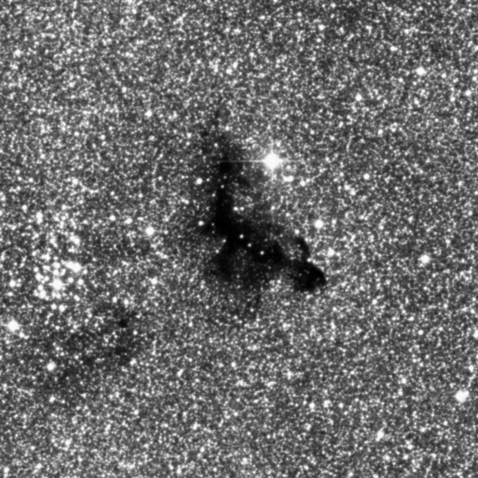
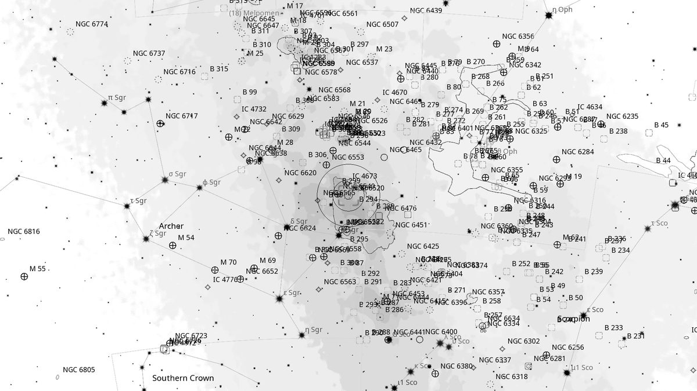
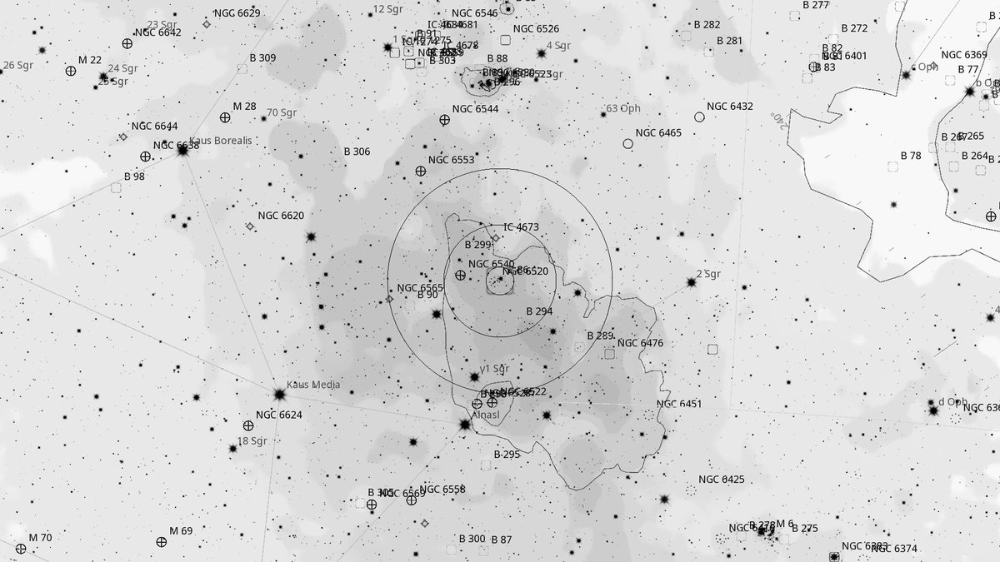
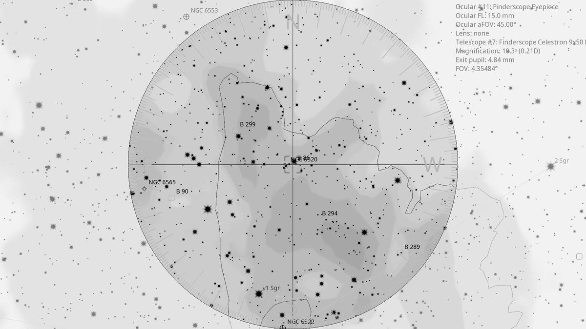
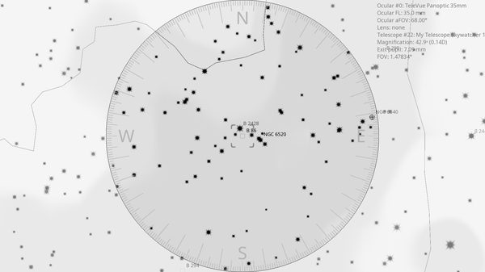

B 86 — Ink Spot Nebula (DN)
| R.A. | Dec. | Size | Mag | SB | Cnt.St | Type | Distance | Chart |
|---|---|---|---|---|---|---|---|---|
| 18h 02m 59.0s | -27° 52′ 03.5″ | 5.0′ | 5.0 | -- | -- | DN | -- | -- |

Interactive Sky View
Background
B 86, the “Ink Spot” Nebula, is a small dark nebula in Sagittarius lying directly adjacent to the rich open cluster NGC 6520 (the “Deadman's Cluster”). Catalogued by E.E. Barnard in his 1919 list of dark markings on the Milky Way, this 5' patch of obscuring dust cuts a striking silhouette against the dense Sagittarius star clouds. A bright orange foreground star sits at its eastern edge, providing colour contrast against the inky black void. The pairing with NGC 6520 is one of the finest cluster + dark-nebula combinations in the sky and was a Barnard favourite.
My Observing Notes
56-cm (Club 22-inch f/3.5 “Lord Sidious”): Suggested by Michael, a fellow visual observer visiting from Canberra, as part of the NGC 6520 / B 86 pairing. Swung down to the eastern sky where Sagittarius had cleared the trees. NGC 6520 is rich and compact with a tight circle of stars around an inner bright star; just beneath sits the inky silhouette of B 86. A bright orange star marks the edge of the dark nebula, giving the field beautiful contrasting colours and darkness.(11 April 2026)
References
Charts



